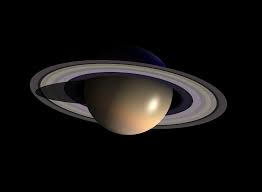
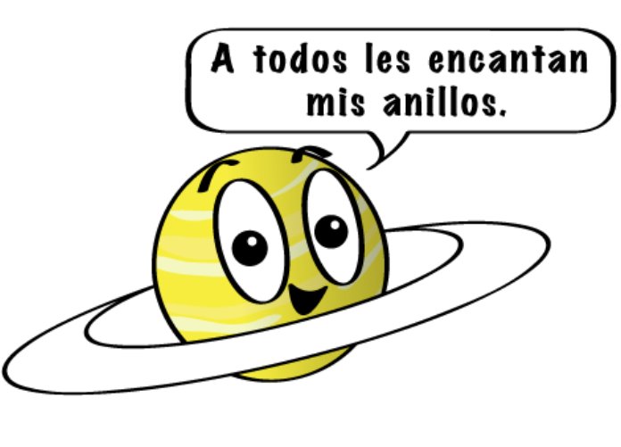

Saturno no es el único planeta que tiene anillos, pero definitivamente tiene los más bellos. Los anillos que vemos están compuestos por grupos de pequeños aros que rodean a Saturno. Están hechos de pedazos de hielo y roca. Como Júpiter, Saturno es una pelota de hidrógeno y helio, en gran parte.

Cuando Galileo Galilei vio a Saturno a través de un telescopio en el siglo XVII, no estaba seguro de lo que estaba viendo. Al principio, creyó que estaba mirando tres planetas, o un planeta con asas. Ahora, sabemos que esas "asas" eran los anillos de Saturno.

Estructura y superficie
Es un gigante de gas, como Júpiter. Está compuesto por hidrógeno y helio, sobre todo.
Tiene una atmósfera densa.
Cuenta con un precioso grupo de siete anillos separados por espacio entre ellos.
El tiempo en Saturno
Un día solo dura 10,7 horas.
Su año equivale a 29 años en la Tierra.
Sus vecinos
Saturno tiene 146 lunas que conocemos hasta ahora.
Es el sexto planeta contando desde el Sol. Sus planetas vecinos son Júpiter y Urano.
Breve historia
Se conoce su existencia desde la antigüedad, ya que podemos verlo sin necesidad de usar telescopios avanzados.
Cuatro naves robotizadas han visitado Saturno: Pioneer 11, Cassini y Voyager 1 and 2.